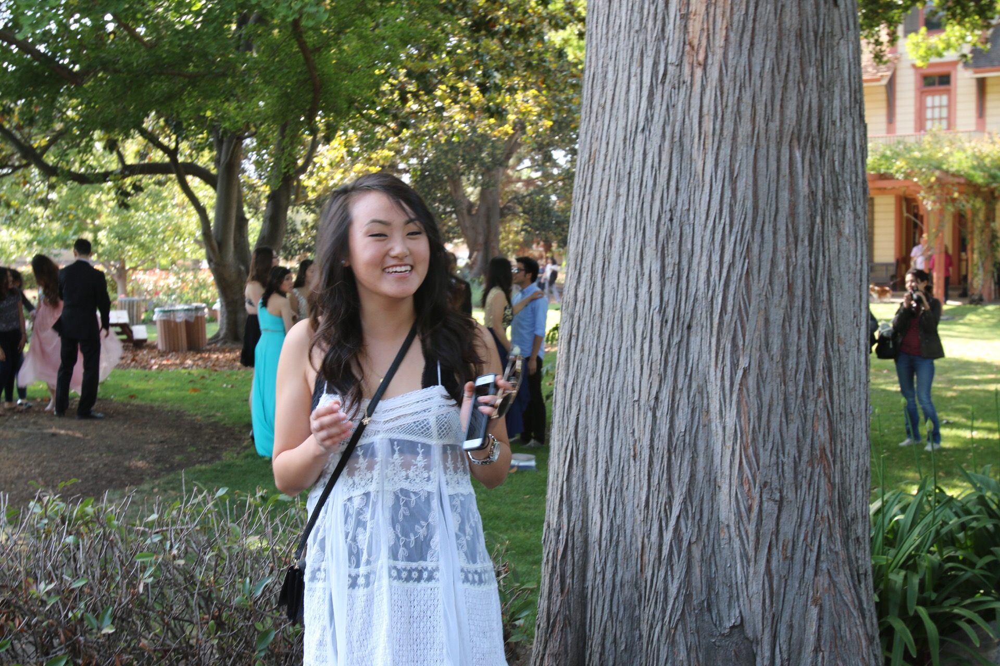

Me / @_conniekim
I'm a student at UC Berkeley [Class of 2018], studying for my B.S in Computer Science. As a member of the tech committee of the Berkeley Tech Review, I helped redesign our website and develop ideas for future podcasts and videos.
I love scuba diving, photography, minimalist design, Scandinavian mythology, cats, and tea.
Contact me at kimm.connie@gmail.com